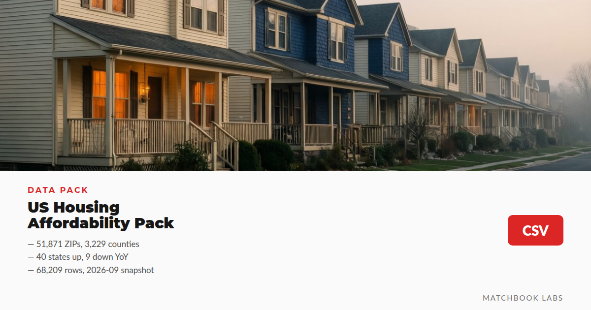

Can a household of four earning 70,000 dollars a year rent a two-bedroom in Houston? That question sends people to HUD's data, and HUD never publishes an affordability table. It publishes two numbers instead, income limits and fair market rents, keyed by area codes, spread across separate Excel downloads.

The first number is the income limit. HUD estimates the median family income for every metro and nonmetro area, then publishes ceilings at 30, 50, and 80 percent, one row per household size from 1 to 8 persons. The 80 percent line marks low income and gates programs like the Housing Choice Voucher. The FY2026 Section 8 file on huduser.gov carries 4,764 county rows across 2,635 HUD areas.
The second number is the Fair Market Rent, the FMR: the 40th percentile gross rent, shelter plus utilities, for standard-quality units, monthly dollars, set separately for studios through 4 bedrooms. Across the 51,895 ZIP rows of the FY2026 file, the national 2-bedroom median is 1,150 a month.
The two numbers answer the Houston question together. The FY2026 80 percent limit for a Houston household of four is 83,200 dollars, so the 70,000 household passes the gate; the Houston 2-bedroom FMR is 2,360 a month. Under the simplified voucher math, the household pays about 30 percent of monthly income, roughly 1,750, and the subsidy covers a gap of about 610. The real calculation runs on adjusted income with agency-set deductions; treat these as the shape of the math.
The shortcut is multiplying the published median by 30, 50, or 80 percent. HUD prints a note under its own tables: the limits may not equal those percentages, because caps on annual increases and decreases pull the rows away from flat arithmetic. New York proves it. Its FY2026 median family income of 104,300 sits below Chicago's 121,500, yet its 4-person limits run 84,800 at 50 percent and 135,700 at 80 percent, far above a flat percentage of its median. Take the published row, or misprice eligibility.
The two scales also move independently: Phoenix's income ceiling for a household of four, 89,900, sits above Houston's, while its 2-bedroom FMR, 1,840, sits below Houston's 2,360. Income limits follow area incomes with one adjustment history; FMRs follow area rents with another; a workflow that assumes the two move together misprices one of them.
The data is free and public domain, but three things make the raw route slow.
First, access. The income limit API requires a key and returned 403 to a keyless test call in September 2026, so the practical route is the Excel files on huduser.gov.
Second, geography. A county is not an FMR area: 67 of the 3,229 county-equivalents in the FY2026 file span more than one, and Aroostook County in Maine covers 71. County names do not join safely either: 423 county names are shared across two or more states. Cleaned versions join on codes like METRO26420M26420 in the hud_area_code column instead.
Third, format. Leading-zero ZIPs die in spreadsheets that read them as numbers, and raw tables carry empty cells at the edges of coverage. Each is a small fix alone; together they are a weekend.
The US Housing Affordability Pack freezes that cleanup into 14 CSV tables, 68,209 rows, from the FY2027 and FY2026 HUD releases plus a Eurostat block. The HUD side holds fair market rents for 51,871 ZIP codes and 3,229 counties: the FY2027 file by ZIP code with studio through 4BR per row, the FY2026 county file with median and max rents, the top-50 metro table, the 50 most expensive 2BR metros, state summaries for both fiscal years, and two QA crosswalks, the 423 duplicate county names and 99 three-digit ZIP prefixes with geography and median 2BR rent.
The Eurostat block adds annual and monthly unemployment for the EU-27 and nine countries, 2003 through 2026; the house price index for the Netherlands and EU-27, 2005 to 2025; and HICP rent indices.
The master table compares 2BR state medians across FY2026 and FY2027 in one schema: 40 states up, nine down, three flat. Vermont moved most, up 15.6 percent, Arizona fell 5.6 percent. The 2BR median spans 610 to 2,600 dollars across the 52 states and territories. Reading the year-over-year table takes two lines of pandas:
import pandas as pd
m = pd.read_csv("affordability-by-state.csv")
m.sort_values("yoy_change_pct", ascending=False)[["state", "fmr_2br_median_2026", "fmr_2br_median_2027", "yoy_change_pct"]].head(5)QA rules ship with the pack: zero empty cells in the HUD tables, leading-zero ZIPs intact as strings, five schema documents, row counts verified per file, snapshot frozen 2026-09-10.
hud_area_code resolves what 423 duplicate county names cannot.area_rows column before treating a county row as one market; 67 counties span several FMR areas.The free route: a 22-row sample CSV and the HUD income limits guide with the FY2026 metro tables. The full US Housing Affordability Pack sells for 12 dollars on Fourthwall. The catalog page lists every dataset; the query layer runs as dataset-mcp on GitHub.